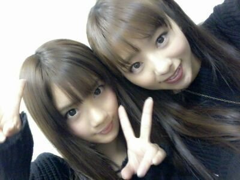

| 2013/01 23 Wed | ポテトにアイスに和菓子にジュー ス... ぉおっ、やばい(；・ ∀・) ろっちぃー♪♪ |
ほほーい★☆★☆
Rottyでぇーす /
えりか&れな
ハッピハッピーバースデー♪
タッタターン )))))
今回こそは今回こそは
変な顔・・)))・・・・・、
ぢゃ?
なーーーーい( ´ -▽- )

良かった良かったぁ〜(*^^*)
前回blog変顔載せすぎたってのを
改善するため...
せいら...笑顔の写真
二枚使わせてもらいます＼(^o^)／
同い年、地方組、
髪色似てて 黒の服★
ぐはははは。♪
今日はなんだかなー
なんだかなー...
ああ〜、 前回のblog
内容と写真があってないってかあw
>▽<!?
それがええんやないかぁ〜ん♪
多分 今年流行るでっ !
あ, ちゃいます笑?
話ぶっ飛びます 。ぴょん♪)))
今日朝起きた瞬間
『よし、今日はサーティワンで
ダブルのアイスを買おう☆』
と思ったから、
お昼頃に準備して
さっそく行ったら
「チーン... あーしの大好きな
大納言小豆がない...☆。」
ウワオ。
何でなんよーーー、、
バタバタ))) バタバタ)))))
仕事の時も
しょっちゅうしょっちゅう
サーティワンアイスが
差し入れでくるのですが
色んな味がある中で
いつも小豆様がおらん。
確かにさ小豆さんは
他の者よりも、
地味かもしんないよお?
だけど 皆に負けない位
輝いてるやつなんだからなっ*^^*
それに もう１つは
大好きなアーモンドファッジを
食べることができた(〃▽〃)
チョコレート
キャラメル
メープル
ナッツ
うん、まひろは
茶色ものが好きなんだね 笑っ//
皆は何味の、アイスが好きですかん?
気になる気になる(・▽・)♪るん
あw
眠たいよぉ〜
ちょっと また明日絶対
更新するからさっ
今日はもうろってぃー
寝ますっ ! !
お先っ 失礼っ、)))
おやすみなさい...♪
あっ あと言い忘れた !
皆、 大好きだよぉ〜(*^^*)?
おやすみん♪♪

コメント(140)
2013/01/23 00:42